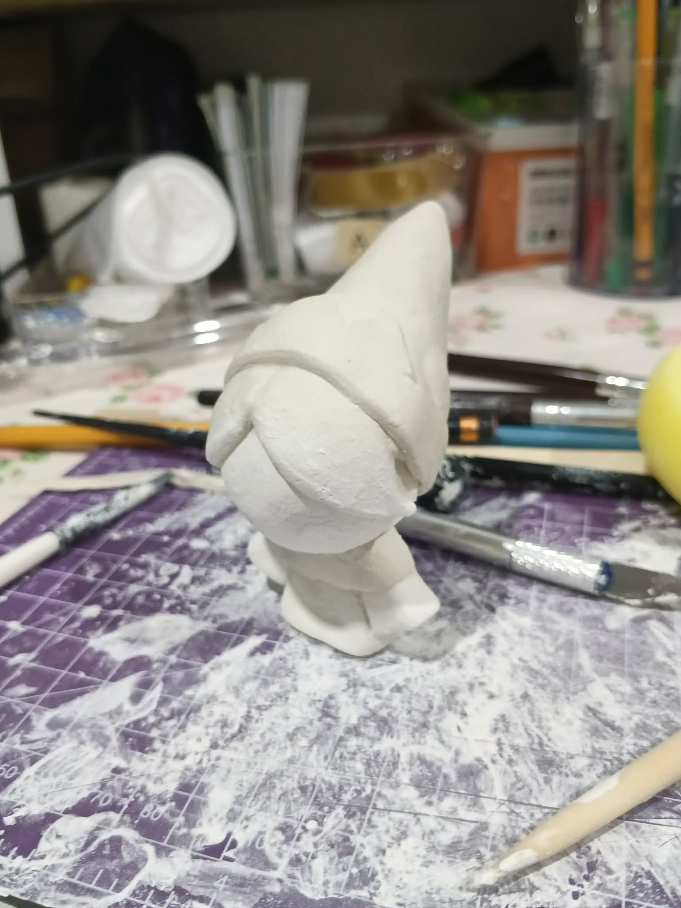
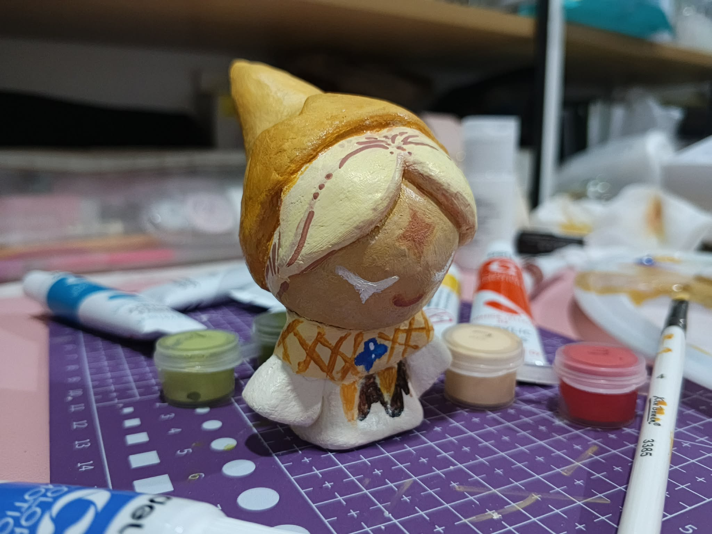

About Me
My philosophy as a student is built upon the truth of Sylvia Plath's words: "The worst enemy to creativity is self-doubt." I've learned that a blank page is less intimidating than the critical voice in my head that whispers a piece isn't good enough before it's even finished. I've long sought and chased after the meaning of 'perfection' in all the things I've did such as academic works and my interests in arts. In the end, it never felt enough for me because I often question myself if my effort were worth it in the end because it felt "unoriginal" or "wrong.". I am naturally a quiet, curious yet a doubtful person and I love to write and draw the world around me. For that, doubts has always been my creativity's enemy and that's fine, because I am resilient enough to fight it back time and time again.
I am naturally a quiet, curious, yet doubtful person, and I love to write and draw the world around me. Because of this, doubt has always been creativity's greatest enemy. Yet that is fine because I am resilient enough to fight it back time and time again.
Now, I see that the first step in any creative act, whether writing a paper, solving a complex problem, or studying for an exam, is granting myself permission to be messy, explore tangents, and make mistakes without immediate judgement. It means embracing the rough draft in all its flawed glory. The goal is to build and refine, not present a perfect final product on the first try. By quieting self-doubt, I free up space for curiosity to lead, for connections to be made, and for my unique perspectives to be showcased. That sums up my philosophy as a student.

Things I love
- Purple and Lilacs
- Cats, especially my cat Loki
- Matcha
- Earl Grey Tea
- Spicy food
- Reading books
My Passion Projects
Mini Projects
I started sculpting again recently and I'm trying to make mini figures of my favorite characters :3


Pride Zine: Rainbow Panic
A LGBTQ+ zine from our organization to celebrate pride month.

Proteas of Valor Brandkit
A brandkit I made for an upcoming womens month zine.


"pond kitties" - mini sculptures
future hobby project where I will make mini cats inspired by water flowers using air dry clay.
Contacts
UP mail: zfordonio@up.edu.ph
Contact no.: +639673620724